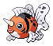
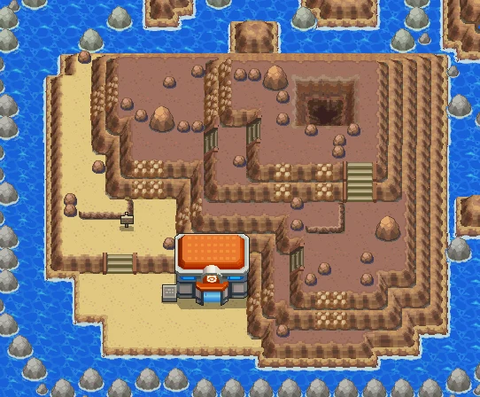
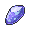
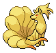

攻略大全 / 心金 / 魂银（详细图文） / 地图总览
21号道路、红莲岛、20号道路、红莲道馆、双子岛、19号道路
通关后
21号道路

21号道路是一条海路，从真新镇往南通往红莲岛。
| 训练家 | 宝可梦 | 奖金 |
|---|---|---|
| Swimmer Nikki | ₽672 | |
| 钓鱼人 Arnold | ₽1408 | |
| 养鸟人 Kinsley | Farfetch'd Lv.36 | ₽1184 |
| 钓鱼人 Murphy | 太阳珊瑚 Lv.32 太阳珊瑚 Lv.34 太阳珊瑚 Lv.36 太阳珊瑚 Lv.38 | ₽1216 |
| Swimmer Chelan | ₽640 | |
| 钓鱼人 Liam | ₽1344 | |
| Swimmer Tyson | ₽672 | |
| 钓鱼人 Gideon | 巨翅飞鱼 Lv.40 | ₽1280 |
| Swimmer Esteban | ₽608 | |
| Swimmer Duane |  金鱼王 Lv.40 | ₽640 |
| 养鸟人 Easton | ₽1152 | |
| Swimmer Kendra | ₽688 |
| 宝可梦 | 版本 | 方式 | 等级 | 出现率 |
|---|---|---|---|---|
| 蔓藤怪 | 心金 / 魂银 | 草丛 | Lv.20, 25, 30, 35 | 早 95% · 日 90% · 夜 95% |
| 心金 / 魂银 | 草丛 | Lv.28 | 早 5% · 日 0% · 夜 5% | |
| 心金 / 魂银 | 草丛 | Lv.28-30 | 早 0% · 日 10% · 夜 0% | |
| 冲浪 | ||||
| 心金 / 魂银 | 冲浪 | Lv.30-35 | 90% | |
| 心金 / 魂银 | 冲浪 | Lv.35 | 10% | |
| 钓鱼 | ||||
| 心金 / 魂银 | 破旧钓竿 | Lv.10 | 85% | |
| 心金 / 魂银 | 破旧钓竿 | Lv.10 | 15% | |
| 心金 / 魂银 | 好钓竿 | Lv.20 | 40% | |
| 心金 / 魂银 | 好钓竿 | Lv.20 | 30% | |
| 心金 / 魂银 | 好钓竿 | Lv.20 | 20% | |
| 心金 / 魂银 | 好钓竿 | Lv.20 | 10% | |
| 心金 / 魂银 | 厉害钓竿 | Lv.40 | 40% | |
| 心金 / 魂银 | 厉害钓竿 | Lv.40 | 30% | |
| 心金 / 魂银 | 厉害钓竿 | Lv.40 | 20% | |
| 心金 / 魂银 | 厉害钓竿 | Lv.40 | 10% | |
| 头锤（A 组树） | ||||
| 心金 / 魂银 | 头锤 | Lv.24-26 | 50% | |
| 魂银 | 头锤 | Lv.24-26 | 30% | |
| 心金 | 头锤 | Lv.24-26 | 30% | |
| 心金 / 魂银 | 头锤 | Lv.24-26 | 20% | |
| 头锤（B 组树） | ||||
| 心金 / 魂银 | 头锤 | Lv.27-30 | 65% | |
| 心金 / 魂银 | 头锤 | Lv.27-30 | 20% | |
| 蔓藤怪 | 心金 / 魂银 | 头锤 | Lv.27-30 | 15% |
| 特殊 | ||||
| 心金 / 魂银 | 丰缘音乐 | Lv.35 | 20% | |
| 心金 / 魂银 | 丰缘音乐 | Lv.25, 30 | 20% | |
| 心金 / 魂银 | 神奥音乐 | Lv.35 | 20% | |
| 心金 / 魂银 | 神奥音乐 | Lv.25, 30 | 20% | |
| 道具 | 版本 | 位置 / 获得方法 |
|---|---|---|
| 心金 / 魂银 | 最东北的沙洲上（隐藏道具） 道路中间的大沙洲上（隐藏道具，2 个） |
↓ 下一站：红莲岛
红莲岛

红莲岛是关都本土西南边的一座大岛，位于21号道路和20号道路之间。岛上曾经有一座研究所、一位著名研究者破败的旧宅，以及红莲道馆。
| 宝可梦 | 版本 | 方式 | 等级 | 出现率 |
|---|---|---|---|---|
| 冲浪 | ||||
| 心金 / 魂银 | 冲浪 | Lv.30-35 | 90% | |
| 心金 / 魂银 | 冲浪 | Lv.35 | 10% | |
| 钓鱼 | ||||
| 心金 / 魂银 | 破旧钓竿 | Lv.10 | 95% | |
| 心金 / 魂银 | 破旧钓竿 | Lv.10 | 5% | |
| 心金 / 魂银 | 好钓竿 | Lv.20 | 40% | |
| 心金 / 魂银 | 好钓竿 | Lv.20 | 40% | |
| 心金 / 魂银 | 好钓竿 | Lv.20 | 16% | |
| 心金 / 魂银 | 好钓竿 | Lv.20 | 4% | |
| 心金 / 魂银 | 厉害钓竿 | Lv.40 | 40% | |
| 心金 / 魂银 | 厉害钓竿 | Lv.40 | 40% | |
| 心金 / 魂银 | 厉害钓竿 | Lv.40 | 16% | |
| 心金 / 魂银 | 厉害钓竿 | Lv.40 | 4% | |
| 道具 | 版本 | 位置 / 获得方法 |
|---|---|---|
| 之后再来 | ||
| 心金 / 魂银 | 岛中央，一块孤零零的岩石上（隐藏道具，需要攀岩） | |
| 心金 / 魂银 | 岛的西北角，一块孤零零的岩石上（隐藏道具，需要攀岩） | |
| 心金 / 魂银 | 岛的中南部，一块孤零零的岩石上（隐藏道具，需要攀岩） | |
| 心金 / 魂银 | 宝可梦中心东北边，台阶上方（需要攀岩） | |
大自然的狂暴
岛上的火山喷发时，大部分建筑不是被埋在瓦砾下，就是被卷进了海里，之后只重建了宝可梦中心。据中心里的一个船员说，火山喷发已经过去一年了。外面的告示牌通知来访者，红莲道馆已经搬到了附近的双子岛。
最后的道馆馆主
和宝可梦中心后面的男人说话，他自我介绍说叫青绿。他正在思考大自然的力量和周围的毁坏，现在没心情对战。尽管如此，他说作为训练家，看到强大的对手还是会想对战。他要看看你拿到了几枚徽章，发现你只有六枚，说你还没准备好和他对战。
↓ 下一站：20号道路
20号道路
20号道路的海浪是游泳的热门地点。航路中间是双子岛。海面往东通往19号道路。
| 训练家 | 宝可梦 | 奖金 |
|---|---|---|
| Swimmer Frankie | ₽704 | |
| 养鸟人 Bert | 长翅鸥 Lv.46 | ₽1376 |
| Swimmer Mina | ₽656 | |
| 野营女 Cheyenne | ₽720 | |
| 养鸟人 Ernie | ₽1536 | |
| Swimmer Leona | ₽704 | |
| 野营女 Adrian | ₽720 | |
| Swimmer Luis | ₽672 | |
| 野营男 Pedro | ₽720 | |
| Swimmer Elmo | ₽672 | |
| Swimmer Lori | ₽672 | |
| Swimmer Nicole | ₽672 |
| 宝可梦 | 版本 | 方式 | 等级 | 出现率 |
|---|---|---|---|---|
| 冲浪 | ||||
| 心金 / 魂银 | 冲浪 | Lv.30-35 | 90% | |
| 心金 / 魂银 | 冲浪 | Lv.35 | 10% | |
| 钓鱼 | ||||
| 心金 / 魂银 | 破旧钓竿 | Lv.10 | 85% | |
| 心金 / 魂银 | 破旧钓竿 | Lv.10 | 15% | |
| 心金 / 魂银 | 好钓竿 | Lv.20 | 40% | |
| 心金 / 魂银 | 好钓竿 | Lv.20 | 30% | |
| 心金 / 魂银 | 好钓竿 | Lv.20 | 20% | |
| 心金 / 魂银 | 好钓竿 | Lv.20 | 10% | |
| 心金 / 魂银 | 厉害钓竿 | Lv.40 | 40% | |
| 心金 / 魂银 | 厉害钓竿 | Lv.40 | 30% | |
| 心金 / 魂银 | 厉害钓竿 | Lv.40 | 20% | |
| 心金 / 魂银 | 厉害钓竿 | Lv.40 | 10% | |
| 道具 | 版本 | 位置 / 获得方法 |
|---|---|---|
| 心金 / 魂银 | 狭长沙洲的东北端（隐藏道具） | |
| 深海之牙 | 心金 / 魂银 | 中南部区域，双子岛东南边的海面上（隐藏道具） |
| 深海鳞片 | 心金 / 魂银 | 中北部区域，双子岛西北边的海面上（隐藏道具） |
双子岛
双子岛是一对形状一模一样、像双胞胎一样的岛。里面的洞窟寒冷刺骨。一开始有好几块大石头和湍急的水流妨碍通行。
| 训练家 | 宝可梦 | 奖金 |
|---|---|---|
| 滑雪者 Cady | ₽1696 | |
| 滑雪板手 Shaun | ₽1600 | |
| 滑雪板手 Bryce | ₽1600 |
| 宝可梦 | 版本 | 方式 | 等级 | 出现率 |
|---|---|---|---|---|
| 心金 / 魂银 | 洞窟 | Lv.26-28 | 30% | |
| 心金 / 魂银 | 洞窟 | Lv.30, 32 | 30% | |
| 心金 / 魂银 | 洞窟 | Lv.26-29 | 30% | |
| 心金 / 魂银 | 洞窟 | Lv.32 | 10% | |
| 特殊 | ||||
| 心金 / 魂银 | 丰缘音乐 | Lv.30, 32 | 20% | |
| 心金 / 魂银 | 丰缘音乐 | Lv.28-29 | 20% | |
| 心金 / 魂银 | 神奥音乐 | Lv.30, 32 | 20% | |
| 心金 / 魂银 | 神奥音乐 | Lv.28-29 | 20% | |
| 心金 / 魂银 | 洞窟 | Lv.32, 34 | 30% | |
| 心金 / 魂银 | 洞窟 | Lv.32, 34 | 30% | |
| 心金 / 魂银 | 洞窟 | Lv.26, 28 | 16% | |
| 心金 / 魂银 | 洞窟 | Lv.32, 34 | 14% | |
| 心金 / 魂银 | 洞窟 | Lv.28-29 | 10% | |
| 特殊 | ||||
| 心金 / 魂银 | 丰缘音乐 | Lv.32, 34 | 20% | |
| 心金 / 魂银 | 丰缘音乐 | Lv.28, 34 | 20% | |
| 心金 / 魂银 | 神奥音乐 | Lv.32, 34 | 20% | |
| 心金 / 魂银 | 神奥音乐 | Lv.28, 34 | 20% | |
| 心金 / 魂银 | 洞窟 | Lv.33, 35 | 30% | |
| 心金 / 魂银 | 洞窟 | Lv.33, 35 | 30% | |
| 心金 / 魂银 | 洞窟 | Lv.27, 30 | 16% | |
| 心金 / 魂银 | 洞窟 | Lv.33, 35 | 14% | |
| 心金 / 魂银 | 洞窟 | Lv.29-30 | 10% | |
| 特殊 | ||||
| 心金 / 魂银 | 丰缘音乐 | Lv.33, 35 | 20% | |
| 心金 / 魂银 | 丰缘音乐 | Lv.30, 35 | 20% | |
| 心金 / 魂银 | 神奥音乐 | Lv.33, 35 | 20% | |
| 心金 / 魂银 | 神奥音乐 | Lv.30, 35 | 20% | |
| 心金 / 魂银 | 洞窟 | Lv.34, 36 | 30% | |
| 心金 / 魂银 | 洞窟 | Lv.35-36 | 24% | |
| 心金 / 魂银 | 洞窟 | Lv.34, 36 | 14% | |
| 心金 / 魂银 | 洞窟 | Lv.31-32 | 12% | |
| 心金 / 魂银 | 洞窟 | Lv.31-32 | 10% | |
| 心金 / 魂银 | 洞窟 | Lv.34 | 10% | |
| 特殊 | ||||
| 心金 / 魂银 | 丰缘音乐 | Lv.34, 36 | 20% | |
| 心金 / 魂银 | 丰缘音乐 | Lv.32, 34 | 20% | |
| 心金 / 魂银 | 神奥音乐 | Lv.34, 36 | 20% | |
| 心金 / 魂银 | 神奥音乐 | Lv.32, 34 | 20% | |
| 心金 / 魂银 | 洞窟 | Lv.38, 40 | 30% | |
| 心金 / 魂银 | 洞窟 | Lv.37-38 | 24% | |
| 心金 / 魂银 | 洞窟 | Lv.37-38 | 14% | |
| 心金 / 魂银 | 洞窟 | Lv.38, 40 | 12% | |
| 心金 / 魂银 | 洞窟 | Lv.34 | 10% | |
| 心金 / 魂银 | 洞窟 | Lv.34 | 10% | |
| 冲浪 | ||||
| 心金 / 魂银 | 冲浪 | Lv.30-40 | 60% | |
| 心金 / 魂银 | 冲浪 | Lv.30-40 | 30% | |
| 心金 / 魂银 | 冲浪 | Lv.35-50 | 10% | |
| 钓鱼 | ||||
| 心金 / 魂银 | 破旧钓竿 | Lv.10 | 85% | |
| 心金 / 魂银 | 破旧钓竿 | Lv.10 | 15% | |
| 心金 / 魂银 | 好钓竿 | Lv.20 | 40% | |
| 心金 / 魂银 | 好钓竿 | Lv.20 | 30% | |
| 心金 / 魂银 | 好钓竿 | Lv.20 | 20% | |
| 心金 / 魂银 | 好钓竿 | Lv.20 | 10% | |
| 心金 / 魂银 | 厉害钓竿 | Lv.40 | 40% | |
| 心金 / 魂银 | 厉害钓竿 | Lv.40 | 30% | |
| 心金 / 魂银 | 厉害钓竿 | Lv.40 | 15% | |
| 心金 / 魂银 | 厉害钓竿 | Lv.40 | 15% | |
| 特殊 | ||||
| 心金 / 魂银 | 丰缘音乐 | Lv.38 | 20% | |
| 心金 / 魂银 | 丰缘音乐 | Lv.34 | 20% | |
| 心金 / 魂银 | 神奥音乐 | Lv.38 | 20% | |
| 心金 / 魂银 | 神奥音乐 | Lv.34 | 20% | |
| 道具 | 版本 | 位置 / 获得方法 |
|---|---|---|
| 1F（东侧） | ||
| 心金 / 魂银 | 去红莲道馆的梯子北边，岩石上（隐藏道具） | |
| B1F | ||
| 心金 / 魂银 | 中北部区域（需要怪力） | |
| 心金 / 魂银 | 中央区域，那大片浅色地面的西侧（隐藏道具） 东北区域，岩脊上 | |
| B2F | ||
 水之石 | 心金 / 魂银 | 下层，中南部区域，台阶上方，从 B1F 过去 |
| 心金 / 魂银 | 下层，西北区域，两根冰石笋中西边那根上（隐藏道具） 上层，桥东端左边那根石笋上（隐藏道具） | |
| B3F | ||
| 心金 / 魂银 | 下层，东南区域，两根冰石笋之间的岩壁上（隐藏道具） | |
| 心金 / 魂银 | 下层，中北部区域，两片放着冰块的冰面后面 | |
| 心金 / 魂银 | 上层，西北梯子附近一根孤零零的石笋上（隐藏道具） | |
| 心金 / 魂银 | 上层，中南部区域 | |
| B4F | ||
| 心金 / 魂银 | 北侧，中北部区域的岩脊上，从 B3F 过去 | |
| 招式学习器13（冰冻光束） | 心金 / 魂银 | 东侧，东边的大岩脊上，从 B3F 过去 |
| 心金 / 魂银 | 中央，急冻鸟原本站的位置（隐藏道具） | |
1F（东侧）
东边岛的内部路分成两条。梯子通往上面的洞室，搬迁后的红莲道馆就在那里；结满冰的楼梯则通往双子岛的深处。
红莲道馆
| 红莲岛宝可梦道馆 馆主：夏伯 |
红莲道馆专精火属性宝可梦。火属性招式对虫、草、冰、钢属性效果绝佳，而火属性宝可梦怕地面、岩石、水属性招式。
洞室地板上用红、橙、黄色的地砖拼成火焰的形状，还有很多改建成临时道馆时留下的岩石。这些岩石让挑战者必须经过好几个狭窄的通道，每个通道都有一位道馆训练家把守。打败训练家后他会让开，挑战者就能继续前往馆主那里。
夏伯的熔岩蜗牛防御很高，用特殊招式打它效果更好。它带岩石属性，水属性攻击特别有用。为了弥补队伍的一个弱点，夏伯让鸭嘴火兽学会了雷电拳来反击水属性宝可梦。烈焰马速度高，物理攻击也高，能用闪焰冲锋造成巨大伤害。夏伯的每只宝可梦都会过热，这是一个非常强大的招式，但每用一次自己的特攻就会降低。为了抵消这一点，每只宝可梦都携带着白色香草，用掉后能恢复被降低的能力。记得带些灼伤药。
| 训练家 | 宝可梦 | 奖金 |
|---|---|---|
| 科学家 Lowell | ₽1600 | |
| 科学家 Daniel |  九尾 Lv.50 | ₽1600 |
| 理科男 Cary | ₽2544 | |
| 科学家 Linden | 鸭嘴火兽 Lv.50 | ₽1600 |
| 理科男 Waldo | ₽2544 | |
| 理科男 Merle | ₽2544 |
| 宝可梦 | 详情 |
|---|---|
Lv.54 · 火 / 岩石 | 特性：火焰之躯 携带： 招式：过热、大晴天、浊雾、岩崩 |
| 鸭嘴火兽 Lv.54 · 火 | 特性：火焰之躯 携带： 招式：雷电拳、奇异之光、过热、大晴天 |
Lv.59 · 火 | 特性：引火 携带： 招式：电光一闪、弹跳、过热、闪焰冲锋 |
对战结束后，夏伯会授予你深红徽章。他还会送你招式学习器50（过热）作为奖品。爬下梯子，走下结冰的楼梯，就能完整探索双子岛了。
B1F


往北走到三块大石头那里。用怪力把右边那块往西推，再把左边那块往北推，然后把中间那块往东推。这样就打通了去中北部区域的路，那里有紧缠钩爪。回到三块大石头那里往西走，爬下下层最西边的梯子。
B2F（下层）
拿附近的水之石，然后跳下台阶，爬上东边的梯子。
B1F
往北走上岩脊。拿解冻药，然后爬下西边的梯子。
B2F（下层）
走下楼梯，往北滑过第一片冰面。转向东，在第二片冰面上和滑雪者 Cady、滑雪板手 Shaun 对战。到第三片冰面时往南滑，和滑雪板手 Bryce 对战，然后往东滑，爬下东北边的梯子。
B3F（下层）
绕过第一片冰面往西南走，用怪力把附近的大石头往北推两步。回到梯子，往西滑过冰面到大石头那里，再往北滑，爬下梯子。
B4F（北侧）
拿高级球，然后爬回梯子上面。
B3F（下层）
往南滑过冰面，爬下东南边的梯子。
B4F（东侧）
往北拿招式学习器13（冰冻光束），然后爬回梯子上面。
B3F（下层）
往西走到一片有三块冰块的冰面。这三块中必须清掉两块才能前进。从北边或南边滑过去撞它们，冰块就会滑走。最后一块从东边撞，它会被推进一个小凹处。往西滑，然后继续穿过窄道。经过梯子，到另一片冰面。从南边撞东北那块冰，再从西边推西北那块。从南边进入冰面，滑到最北边那块冰，然后按顺时针方向走就能拿到大珍珠。爬下西南边的梯子。
B4F（中央）
最底层满是妨碍通行的大岩石。用冲浪往北到下一道岩脊，然后继续往东，爬上中央岩脊上的梯子。
B3F（中央）
爬上下一个梯子。
B2F（上层）
往东南过桥，爬下东南边的梯子。
B3F（东南）
爬下下一个梯子。
B4F（南侧）
用冲浪继续往西。爬上中南部的岩脊，就能找到关都三只传说之鸟中的第一只：急冻鸟。
对战急冻鸟
先用火、电、钢属性攻击快速削减它的体力，再用虫和草属性招式进一步削弱它。可以考虑用睡眠、麻痹之类的异常状态限制它的行动，也记得带些回复道具。
| 宝可梦 | 详情 |
|---|---|
Lv.50 · 冰 / 飞行 | 特性：压迫感 招式：原始之力、高速移动、冰冻光束、反射壁 |
之后再用冲浪到西北的岩脊，爬上那里的梯子。
B3F（上层）
往南再往东拿活力碎片，然后往回走，爬上西南边的梯子。
B2F（西南）
爬上下一个梯子。
B1F
往北走，用怪力开路。爬上西北边结冰的楼梯。
1F（西侧）
西边的出口在南边。
↓ 下一站：19号道路
19号道路

19号道路从20号道路往北回到浅红市，是游泳和日光浴的热门地点。
| 训练家 | 宝可梦 | 奖金 |
|---|---|---|
| Swimmer Tucker | ₽704 | |
| Swimmer Debbie | ₽736 | |
| Swimmer Harold | ₽640 | |
| Swimmer Jerome | ₽608 |
| 宝可梦 | 版本 | 方式 | 等级 | 出现率 |
|---|---|---|---|---|
| 冲浪 | ||||
| 心金 / 魂银 | 冲浪 | Lv.30-35 | 90% | |
| 心金 / 魂银 | 冲浪 | Lv.35 | 10% | |
| 钓鱼 | ||||
| 心金 / 魂银 | 破旧钓竿 | Lv.10 | 85% | |
| 心金 / 魂银 | 破旧钓竿 | Lv.10 | 15% | |
| 心金 / 魂银 | 好钓竿 | Lv.20 | 50% | |
| 心金 / 魂银 | 好钓竿 | Lv.20 | 40% | |
| 太阳珊瑚 | 心金 / 魂银 | 好钓竿 | Lv.20 | 早 10% · 日 10% · 夜 0% |
| 心金 / 魂银 | 好钓竿 | Lv.20 | 早 0% · 日 0% · 夜 10% | |
| 心金 / 魂银 | 厉害钓竿 | Lv.40 | 60% | |
| 太阳珊瑚 | 心金 / 魂银 | 厉害钓竿 | Lv.40 | 早 30% · 日 30% · 夜 0% |
| 心金 / 魂银 | 厉害钓竿 | Lv.40 | 早 0% · 日 0% · 夜 30% | |
| 心金 / 魂银 | 厉害钓竿 | Lv.40 | 10% | |
| 碎岩 | ||||
| 心金 / 魂银 | 碎岩 | Lv.24-27 | 80% | |
| 心金 / 魂银 | 碎岩 | Lv.28-31 | 20% | |
| 大量出现 | ||||
| 心金 / 魂银 | 大量出现 | Lv.35 | 60%（冲浪） | |
| 道具 | 版本 | 位置 / 获得方法 |
|---|---|---|
| 招式学习器55（盐水） | 心金 / 魂银 | 东南边的小沙岛上（需要冲浪） |
| 心金 / 魂银 | 招式学习器55 所在的位置（隐藏道具，需要冲浪） | |
| 心金 / 魂银 | 水边告示牌往西两步（隐藏道具，需要冲浪） 海滩东南角，一块小岩石上（隐藏道具，需要冲浪） | |
| 心金 / 魂银 | 海滩东北边，两块小岩石之间的岩壁上（隐藏道具，需要冲浪） | |
| 心金 / 魂银 | 浅红市关口东南边，两块可敲碎的岩石后面（隐藏道具，需要碎岩） |
清理完毕
等你回到浅红市外的海滩时，火山落石已经清理干净了。现在可以在浅红市和19号道路之间自由往来。
↓ 下一站：红莲岛
红莲岛
最终舞台
用飞翔回到红莲岛，和青绿说话。你已经拿到了关都的另外七枚徽章，他邀请你去常青道馆和他对战，然后离开了。最后一场道馆战的舞台已经准备好了！
↓ 下一页：常磐道馆、大木研究所、22号道路、28号道路
原文：Bulbapedia《Walkthrough:Pokémon HeartGold and SoulSilver/Part 27》（修订版本 4453104，），作者见原文页面历史。本页由 Eli 的杂货间翻译为中文，并有改动（重新排版、精简部分图注）。原文与译文均以 CC BY-NC-SA 2.5 授权。配图来自原站，版权归原作者与游戏厂商；地图截图来自 Bulbagarden Archives，游戏画面版权归 Nintendo / Game Freak / The Pokémon Company。